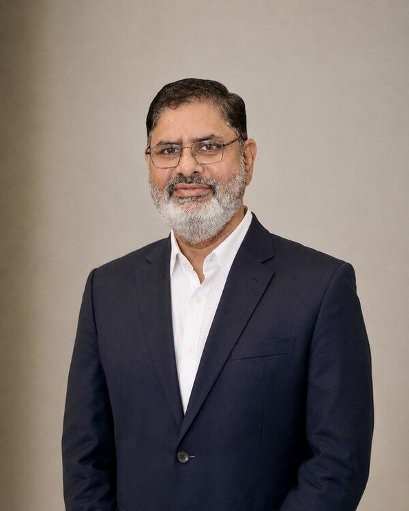

Tushar Sirohi
Tushar Sirohi is a practising advocate with 27 years of standing at the Bar. Over the course of his career he has handled a wide range of matters, with a particular focus on real estate and property law, in which he has developed considerable expertise. He has additionally represented various banks and non-banking financial companies (NBFCs) in recovery proceedings, and his practice extends across the breadth of civil law.
His real estate practice spans the full field, from title investigation, conveyancing and the drafting of sale, lease and collaboration agreements to hard-fought litigation. He has represented developers, allottees and property owners in disputes over possession, specific performance, builder-buyer arrangements and cancellation of allotment, and appears regularly before the Real Estate Regulatory Authority (RERA) on delayed possession, refund and compliance.
In his banking and recovery practice, he has acted for lenders in proceedings for the enforcement of security interests, recovery of debt and connected civil litigation, advising on both the strategy and the documentation that underpin successful recovery. His long familiarity with revenue records, local practice and the machinery of the civil courts allows him to anticipate obstacles that often determine the outcome of a property dispute.
Clients value his composure under pressure, his practical judgment and the reassurance that comes from nearly three decades of courtroom experience. He leads the firm’s real estate and civil litigation practice and mentors its younger lawyers, setting the standard of preparation and conduct for which the firm is known.
Most property disputes are decided by the record: the title, the revenue entries and the documents that long predate the conflict.